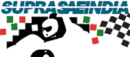
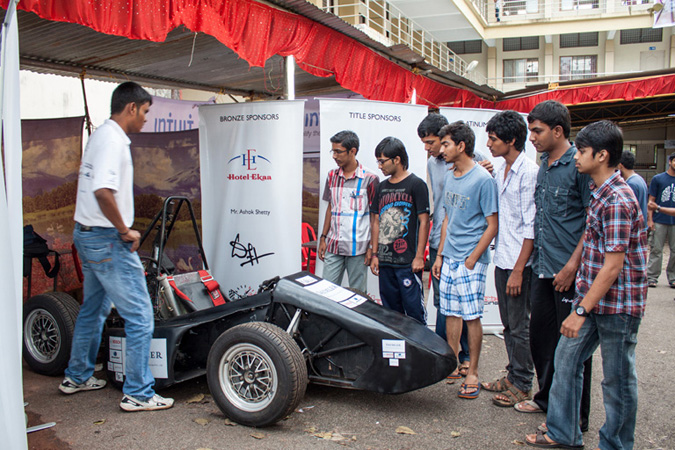
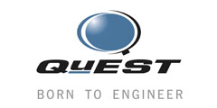

SAE SUPRA 2014

The technical team has been working furiously over the last month in order to optimize the car’s performance for our next event, SAE SUPRA. Among the more significant changes is switching from a push rod to a pull rod suspension at the front, a configuration that a number of Formula 1 teams use, including Ferrari. Also in the pipeline is a new ECU to better suit the needs of our car. Pursuing a bottom up approach, we plan to manufacture it independently, a task requiring immense technical sophistication. Further, we are reconfiguring our exhaust system to enable greater flexibility and interchangeability in the future, continuing our constant search for innovation and technical superiority.
ENGINEER 2013

Our college held its annual tech fest recently with a foot fall in excess of 7000, and as ever, NITK Racing made its presence felt. The concurrence of the Indian Grand Prix meant that there was an atmosphere of interest in motor racing. A stall was set up where team members interacted with students from various colleges as well as other guests of the fest. The highlight was the car being put on display, arousing a great deal of excitement and curiosity. The support we received buoyed us to work even further towards our goal.
Registration
February 15, 2013

We are proud to announce that NITK Racing has officially registered for Formula Student Hungary 2013. Only fourteen slots were up for grabs in the second phase of registration (the first phase was only open for teams from Eastern Europe). The event will be held at Gyor, Hungary from August 22-25, 2013 and will see over 45 teams compete for the top honours.
We look forward to the competition and hope to better last year's performance with the NR-XIII.
Manufacturing begins
January 15, 2013
With the design and validation phases coming to an end, the manufacturing stage has begun. A significant change from last year is the use of MS SAE 1018 in place of Chromoly 4130 in the chassis. The engine intake and exhaust assemblies were manufactured using a new method called Rapid Prototyping with the help of Mr. Pruthviraj Umesh (Assistant Professor, Department Of Applied Mechanics And Hydraulics) at in-house facilities in NITK Surathkal.
Rapid Prototyping
 Rapid prototyping is a group of techniques used to quickly fabricate a scale model of a physical part or assembly using three-dimensional computer aided design (CAD) data. Construction of the part or assembly is usually done using 3D printing technology. During the initial stages of its inception, it was used to produce models and prototype parts. However, the many distinct advantages of this process allowed for a much wider range of applications such as manufacture of production-quality parts in relatively small numbers.
Rapid prototyping is a group of techniques used to quickly fabricate a scale model of a physical part or assembly using three-dimensional computer aided design (CAD) data. Construction of the part or assembly is usually done using 3D printing technology. During the initial stages of its inception, it was used to produce models and prototype parts. However, the many distinct advantages of this process allowed for a much wider range of applications such as manufacture of production-quality parts in relatively small numbers.
NR-XIII: The beginning of a new journey
After a successful stint at Formula Student Hungary '12, the team began its challenge to take things a notch higher. An analysis of the Hungary event quickly ensued and soon enough, work on the NR-XIII started picking up speed. The design and validation phases were finished by the end of December.
Return and rerun of the DH NR-XII
January 4, 2013
Meanwhile, after a considerable delay, the DH NR-XII reached NITK Surathkal in good condition. After a few initial quality conformance checks, the car was up and running in no time. With the car back, testing on it began in full flow to gather the required data to analyze the car's performance. The Data Acquisition System from National instruments has been pretty useful in this regard. Furthermore this gave our drivers the opportunity to get some valuable driving experience under their belts.

 Engineer 2012
Engineer 2012
October 19, 2012
NITK Racing left its mark on Engineer 2012, NITK Surathkal's annual technical fest with an array of events at the exclusive stall during the event. The stall with it's give-away NITK Racing merchandise and daily quizzes was popular amongst the students of eighty-odd colleges who attended the fest. An Auto Quiz, sponsored by DH And Sons and hosted by the team, saw enthusiastic participation as well. The stall was an opportunity to give due credit to our sponsors whose logos were on display.
Powered By

- 